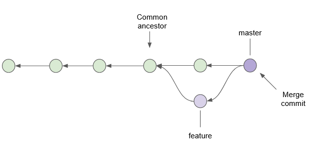
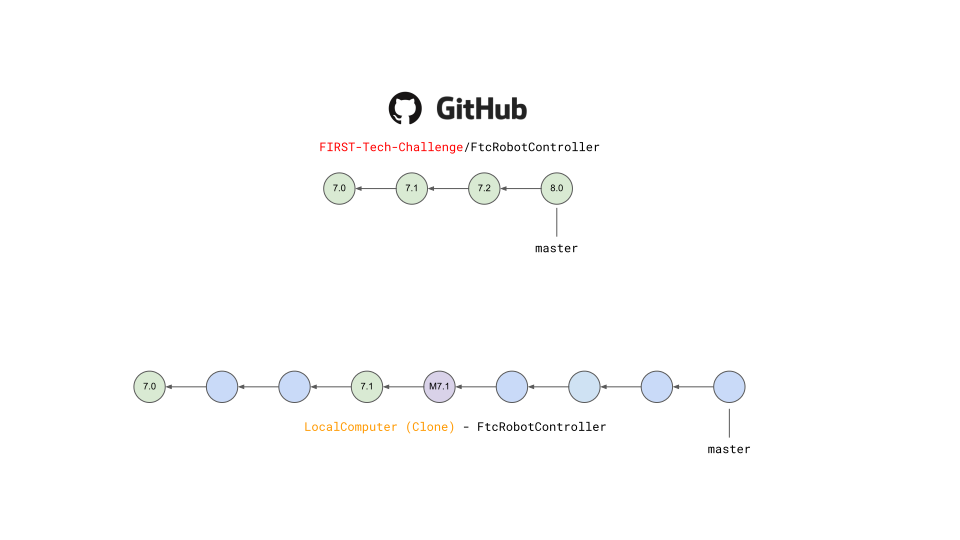
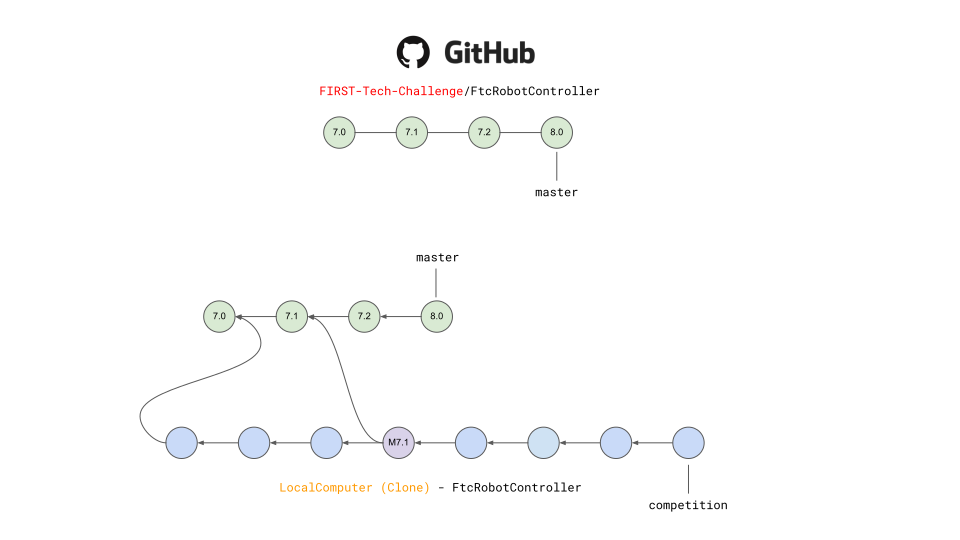
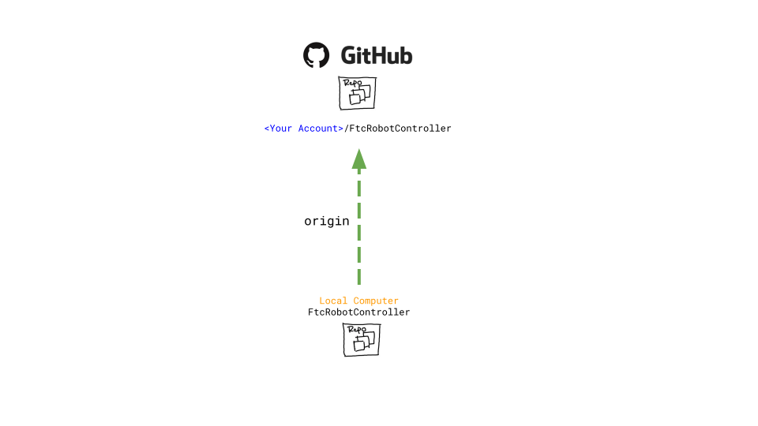
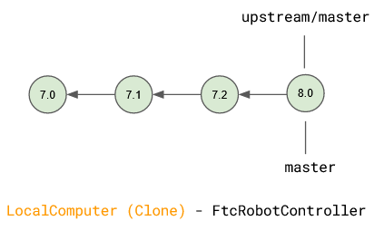
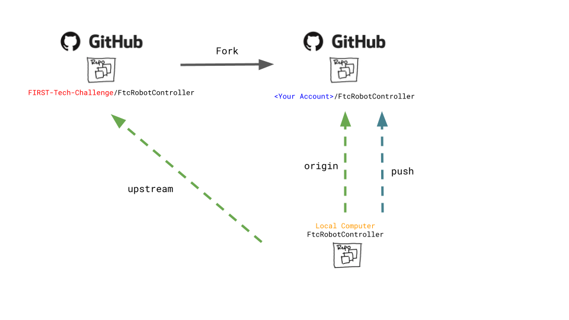
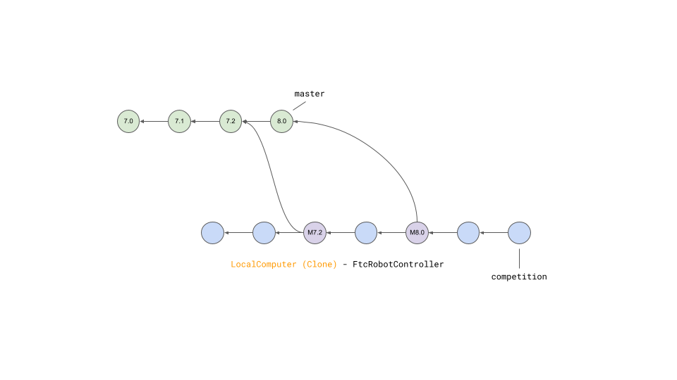
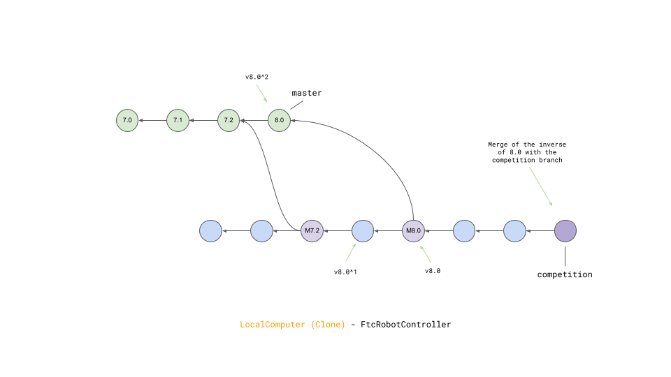

This approach assumes a basic familiarity with git and GitHub. As with most
things related to git there are many different ways to satisfy any
objective. This documentation describes one method for Windows users.
Users not comfortable with command line tools and git should obtain the SDK
via Downloading the SDK as a zip archive.
A Fork on GitHub is a copy of another repository on GitHub from one account
to another account. The new forked repository retains a parent-child
relationship with the origin repository. Forks are typically used when software
will have an independent line of development, such as when FTC teams develop
their own team code using the FIRST-Tech-Challenge/FtcRobotController
repository as a basis. FTC teams should create a Fork of the
FIRST-Tech-Challenge/FtcRobotController repository as a convenient way to
manage their software development process. Thanks to the parent-child
relationship, when changes are made to the parent repository those changes can
be easily tracked and fetched/merged into the forked repository, keeping the
forked repository up to date.
Warning
Teams should not issue pull requests against the upstream parent, the
FIRST-Tech-Challenge/FtcRobotContoller repository. Forks of the
FIRST-Tech-Challenge/FtcRobotContoller repo may always fetch changes, but
should never attempt to push changes up to the repo.
A Clone is a copy of a repository, typically on a local computer. A team
member creates a feature branch of the team’s repository for feature development, and
clones the branch to a local computer. Software development and testing then
happens completely within their local clone. Once they’re finished, or they’ve
reached a checkpoint, the changes within the local clone can then be pushed
from their local clone back to the team fork. That feature branch can then be
merged into the team’s main repository branch once it has been accepted by the
team. Multiple different developers can work seamlessly using this process.
A branch is a series of commits that are independent of any other lines of development
and is typically used to develop new features for the repository. The default branch for the
FtcRobotController repository, and its forks and clones, is master (though for all newer
repositories created by GitHub the default branch is called main). Using
branches judiciously can help developers collaborate on a common set of
software by isolating changes, keeping the default branch clean, and providing
space for feature development to iterate independent of software that’s been
deemed ‘production ready’.
Each circle represents a commit to a branch. The name of the branch always points to the most recent
commit, also known as the HEAD. While there may be many branches there is only one HEAD and it always,
unless it is in a detached state, points to the
latest commit of the currently checked out branch. All other commits point to their immediate parent.
A commit is a snapshot of the entire workspace at a point in time. Git does not store diffs. If you make a change to a file, and
create a new commit with the changed file, it stores the entire changed file in the commit. To avoid unnecessary
duplication of files, if your repository consists of three files - one changed and the other two were unchanged - then the
snapshot merely points back to the unchanged files rather than containing unchanged data.
Note that each commit has a parent which allows git to determine reachability of commits from different
branches. It also allows git to determine the common ancestor commit of any two branches, which is important
when merging branches. More on that later.
So what is a branch? A branch is simply a named pointer to a commit. When a branch is created you are just
telling git to create a name, and point it at a commit. Being on a branch simply means that when you add
a new commit, git moves the branch name to the new commit and the new commit’s parent is the commit that the
branch name was pointing to previously. Since this creates a line of development independent of the parent, developers can experiment,
make changes, develop new features, all without disrupting the work of other team members. When a developer is satisfied
that a branch is stable enough to be shared, the branch can be merged back into the parent.
Immediately after creating a branch the new branch name simply points to the latest commit from the branch that
the new branch was created from. Now imagine that we create a new commit on that branch.
Note how the new commit caused the name pointer of the feature branch to move to the new commit, while the
name pointer for the master branch remains on the prior commit, but the parent of the new commit is the
commit that the name pointer for master points to. If a new commit is added to the master branch then the
parent of the new commit is also the commit that master is pointing to thereby creating independent lines
of development.
Eventually you typically want to merge that feature branch back into the main
line of development represented by the master branch. When you merge one
branch into another, git traverses the ancestor commits of the branches
to find the common ancestor. It then determines what changed from the
common ancestor, to the head of each branch, and applies those changes to
a new commit called a merge commit. An artifact of this process is that
the merge commit will have two parents.

Merging the feature branch back into the master branch.
As shown above, the feature branch still exists. New commits added to
the feature branch will diverge again from the master branch. However if
development of the feature is finished, the branch can be deleted. Deletion
of the branch simply results in the name pointer being deleted. Branch
deletion does not result in the deletion of any commits that were made
on that branch. As you can see here, the commit that was on the feature
branch still exists and is reachable by referencing the correct parent
from the merge branch.
It can be useful to ensure that the default branch in team forks and clones matches the default branch for
FIRST-Tech-Challenge/FtcRobotController. However a typical development pattern will have team developers committing
team software back to the master branch, whether via merges from feature branches, or direct commits to master.

FIRST-Tech-Challenge/FtcRobotController master vs. typical team repository
master.
Team commits are represented by blue circles, while commits containing SDK updates are represented by green circles. The
purple circle is a merge commit. More on merges later. In this
instance team commits are interleaved with SDK updates (1), which produces a situation where the two default branches do not match.
(1) Not really, or maybe depending upon how the commit parentage lays out.
This is a vastly simplified view of things, but is sufficient to demonstrate the logical concept
and is the view of things you get if you simply execute git log.
For an in-depth, approachable, explanation of exactly what is happening with commits as they relate to
branches see this tutorial.
While this is a perfectly acceptable, and a very common branch management strategy, certain benefits can be obtained if we
isolate the default branch so that it always matches the parent. The following figure demonstrates a clone whose master branch
is tracking the master branch from FIRST-Tech-Challenge/FtcRobotController.

Team repository’s master always matches
FIRST-Tech-Challenge/FtcRobotController’s master branch.
The purple commit is a merge of v7.1 into the competition branch. In this diagram, v7.2 and v8.0 remain unmerged and the
competition branch will be building against v7.1 of the SDK.
Following this model means that commit history for the master branch for the team’s repository will always match the commit
history for the FIRST-Tech-Challenge/FtcRobotController’s master branch. All software that teams intend to compete with is merged into a competition branch.
Features, new software, experiments, etc, are worked on in child branches of the competition branch and merge back into the
competition branch, not the master branch. SDK updates to a team clone’s master branch should always be conflict free,
updates can be done independent of merges into a competition branch, and if something goes sideways when doing a merge of
an SDK update into development it can be more straightforward to recover as opposed to backing out of an update straight into
master where the branches do not match.
More detailed information on the mechanics of branching can be found here
Using Branches
The following assumes all operations are done on the master branch of your
local repository.
Obtain and install GitForWindows This
software contains a git client along with a bash shell. All of the command
line snippets below assume you are using a bash shell and that git is in
your path. GitForWindows is the easiest way to provide this for Windows
machines. Macs have a built in bash shell called terminal, but git must be
installed separately.
Forking the repository is as easy as clicking the “ Fork”
button shown in the image above. This will take you to the “Create a new fork”
page, and will auto-fill the “Owner” and “Repository name” fields. Just enter a
description (optional), leave the “Copy the master branch only” option checked,
and click the green “Create fork” button.
Once created, your new fork will be located at github.com/<username>/FtcRobotController
unless you edited the fork name.
Clone from your fork onto your local computer. Note in the image below the
account is FIRST-Tech-Challenge, but after your fork, the account should be
your team account. In all other respects the user interface will be
identical.
To clone your fork of the FtcRobotController, follow these steps:
Click the green “ Code” button shown in
the image above.
Ensure the “Local” and “HTTPS” sub-tabs are selected.
Click the “” button to copy the url in
the text entry box.
Open a “Git Bash” shell in a suitable directory. This is easily done
on Windows by opening the File Explorer, finding the directory you want
to clone the repository into, right clicking on that directory folder
and selecting “Git Bash here”
Within the Git Bash shell, execute the following command
gitclone<copied-url>
Git will download a clone of your repository. When it’s done, Code away…
This is the point where you can create a branch for feature development, if
desired. To create a branch, we can create and switch to a new branch via
the following git-checkout command:
gitcheckout-b<branchname>
Using the -b option creates the new branch specified by <branchname>
and automatically switches to that branch. Omitting the -b option will
simply switch to an existing branch if one exists.
Do not make changes to software in the FtcRobotController directory within
the repository. SDK updates will be much easier if you do not change anything
within the FtcRobotController directory.
Limit the use of long-lived branches. Branches should implement a feature.
Branches should not track milestones. For example a branch named
‘league-meet-1’ is tracking a milestone. It is much better if your branches
track smaller units of development. ‘detect-target’, ‘drive-to-parking’,
‘drop-game-element’. Break your software down into tasks for the robot to
do, and use branches to implement those tasks. This will allow for much
easier collaborative development, much smaller change sets when merging, and
much easier fetches and merges.
Try to keep your git index clean. This will
make fetches and merges easier. gitstatus is your best friend here. Use
gitstatus often to see what has changed in your local workspace. Commit
often in logical chunks so that it is easy to see the most recent changes.
Use short, meaningful, commit messages. Do not use slang, offensive, or
personal messaging in a commit message. When you push your software to
GitHub, those commit messages will be public. If you plan to eventually
become a professional software developer, and you retain your existing GitHub
account any potential employer will be able to review your commit messages.
Tread lightly here.
Updating the SDK involves pulling newly released software into both your local
clone’s and your fork. There are two ways to go about this. Either directly
fetch and merge software from the parent into your fork on github, then fetch
and merge to your local, or fetch from the parent into your local clone, merge
locally and then push to your fork.
This author prefers the latter because it gives the developer the opportunity
test new software before pushing to the fork. It also allows for merge
conflict resolution locally instead of through GitHub’s UI.
When describing how to update a repository many basic tutorials will use the
gitpull command. The gitpull command is actually doing a fetch and
merge for the user behind the scenes. This can be fine, but it is useful to
understand the concepts of fetching and merging as independent operations.
If things go south, and you have a good concept of the underlying mechanics,
you are much more likely to be able to fix any subsequent problems.
Git is fundamentally built around the idea that there can be many copies of a
repository floating about on the internet, or other people’s machines, or
corporate file servers, or any number of locations. And that these
repositories can linked to each other remotely. A remote repository is simply
defined as a version of a repository hosted somewhere else. In the preceding
examples, your fork of FtcRobotController is a remote of your local clone.

Illustration of FtcRobotController as remote named origin.
Remotes may be referenced in git commands and a repository can have any number
of remotes. The default name for the remote of a repository that has been
cloned is ‘origin’. The conventional name of a remote that tracks the parent
of a fork is ‘upstream’.
Setting the FIRST Tech Challenge FtcRobotController repository as
an upstream remote of your local clone allows you to fetch
changes from the FIRST-Tech-Challenge/FtcRobotController to your
local clone using the alias name ‘upstream’. This is very powerful.
If the reason why this is important isn’t immediately obvious, please
re-read the two paragraphs under header marked UpdatingyourForkandLocalClone above.
The rest of this tutorial assumes that you have added
FIRST-Tech-Challenge/FtcRobotController as an upstream in your local clone.
Fetching is the process of downloading software changes from a remote
repository. Note specifically that fetching does not modify any of the
existing software in the repository that you are fetching into, git isolates
the changes in the local repository.
If you are working with a team, and a teammate has pushed software to your
FtcRobotController fork, you may fetch that software to a local clone by
running
$ gitfetchorigin
This will download any changes in all branches on the remote named origin that
are not present in the local repository.
Merging is the process of merging fetched software into a branch, most commonly
the current branch of the repository. A merge is where things are most likely
to get a bit confusing. However, if you are simply merging from a remote
master into a local master, and your local master is always tracking the
remote, your merges should go smoothly.
Merging fetched changes from the origin repository.
Ensure you are on the master branch and run the following:
$ gitmergeorigin/master
The master branch should be clean (i.e. gitstatus on the master
branch shows no files that are modified but uncommitted) when this operation is
performed. Team members should be doing development work in feature branches,
not in the master branch.
Conflicts, or “What happens when more than one change is pending for a given
piece of code.” It’s best to read this great tutorial on
Git merge conflicts.
Merge conflicts are a normal part of working in teams, and only with experience
can you learn to effectively manage conflicts. Always approach with patience and
a deep respect for the process.
Remember to use gitremote-v to ensure that the upstream has been set
as a remote on your clone. If not, be sure to review the “Remotes” section
again to add the FtcRobotController repository to the upstream remote on
your clone.
To update from the SDK, we simply fetch from upstream,
FIRST-Tech-Challenge/FtcRobotController, the parent of your team fork, then
merge and push to origin to complete the update.
Instead of fetching from origin, fetch from upstream. This copies in any commits that you don’t already have in your local clone.
In the diagram above that is the v8.0 commit. Your local master is not changed. It is still pointing to, and representing, the v7.2
commit. Since a commit is a complete snapshot of a workspace at a point in time, nothing changes in your workspace, but your
repository has a new commit with the branch name upstream/master.
$ gitfetchupstream

Merging fetched changes from the upstream repository.
After fetching, merge the upstream/master branch into master. If your local master matches your upstream master then a merge is as
simple as moving the master branch label to the commit that upstream/master is pointing to. This is referred to as a fast-forward
merge. And since a commit is a complete snapshot of a workspace at a point time, your local workspace now contains the snapshot
represented by v8.0.
$ gitmergeupstream/master

Pushing fetched and merged changes back to your team fork.
Once you’ve merged the upstream/master into your local clone’s master branch, push those changes to GitHub so that your GitHub clone
reflects the upstream repository.
$ gitpushoriginmaster
If you were working in a feature branch and want to bring the new SDK changes into that feature branch you
merge from master into the branch by checking out the branch and running the merge command. This is where things might get dicey
as this is where you are most likely to encounter merge conflicts.
Typically, the working branch of a local repository, whether it’s master, or a competition branch will eventually contain a
series of team commits interleaved with SDK update commits. In this scenario a team can not simply roll back to a prior SDK
version without also rolling back all of their team commits. Consider the following diagram.

A repository with both team commits and SDK update commits.
If you just chopped off the branch at M7.2, you’d lose the three blue team commits. In order to retain team work, instead create a
new merge commit that reverts the 8.0 commit. Do not revert merge commits, e.g. M8.0. The merge commit itself may contain work that
represents the divergence of the the two branches that were merged. This is not what you want. You want to revert the parent of the merge
commit that represents the new, old, SDK version.
A tag is simply a named pointer to a commit, that unlike a branch pointer, or HEAD, never moves. Since a commit is a snapshot in
time of an entire workspace, this allows a developer to tag a point in time in an immutable fashion.
FIRST uses tags to track SDK versions through a standard semantic versioning naming scheme. When a new
SDK version is released, the FTC engineering team pushes a release candidate branch to FIRST-Tech-Challenge/FtcRobotController, then merges
that branch into master. This results in two commits, the new SDK version commit that contains all the good stuff, and a merge commit
representing the merge from the candidate branch into master. The release is then formally cut, where a tag is then created,
on the merge commit.
Tags from remotes are not automatically copied into a repository on a clone. To retrieve tags execute.
$ gitfetch--all--tags
The –all option fetches at once from all remotes, the –tags option tells git to fetch the tags.
Tags always follow the semantic versioning rules. e.g. v7.0, v7.1, v7.2, v8.0, etc.
The ^ syntax allows one to reference parents of a commit and can be applied to tag names. tag^ is the immediate parent of the commit
tag points to. For commits with multiple parents such as merge commits one can apply a number to refer to a specific parent.
tag^1 is the same as tag^ and is the first parent of the commit, tag^2 is the second parent of the commit.
If any commits have dependencies on new features or APIs introduced in the reverted versions, then your
build will break. You will have to manually figure out how to fix your software so that it is no longer depends upon
reverted software.
Remember that Git does not delete commits (with a few exceptions), so in order to revert a commit we must create a new commit that is the inverse of the commit you want to revert from. And you’ll want to do this for every version,
in reverse order, that you want to undo. The target of the command below is the tag of the version you want to undo, not the tag of the
version you want to revert to.

Result of revert - a new merge commit representing the revert from v8.0 to v7.2.
Because the merge commit has two parents, and you want to reference the SDK version commit, use the tag name you want to roll back and append ^2. For example to roll back v8.0, resulting in the SDK
compiling against v7.2 use.
$ gitrevert-Xtheirsv8.0^2
The -Xtheirs option is a convenience that says, “If there are any conflicts, automatically take the software from the v8.0^2 side.”
Warning
If you want to downgrade more than one revision you must revert
each revision in sequence otherwise you could wind up with changes remaining
after reversion from the SDK version in between latest and the target you
are referring to. For example if you need to downgrade from v8.1.1 to v8.0,
for reference all SDK versions can be found
here,
you must revert v8.1.1 followed by v8.1. If you don’t follow this order,
then changes in v8.1.1 that don’t overlap with v8.1 will remain in your
workspace and that’s not what you want.
Assumes all commands are run from the root directory of your local clone. Also assumes you are not committing team code to your local
master branch, but instead are working in a competition branch.
Add FIRST-Tech-Challenge/FtcRobotController as a remote
{kind=link}
{kind=link}
{kind=link}